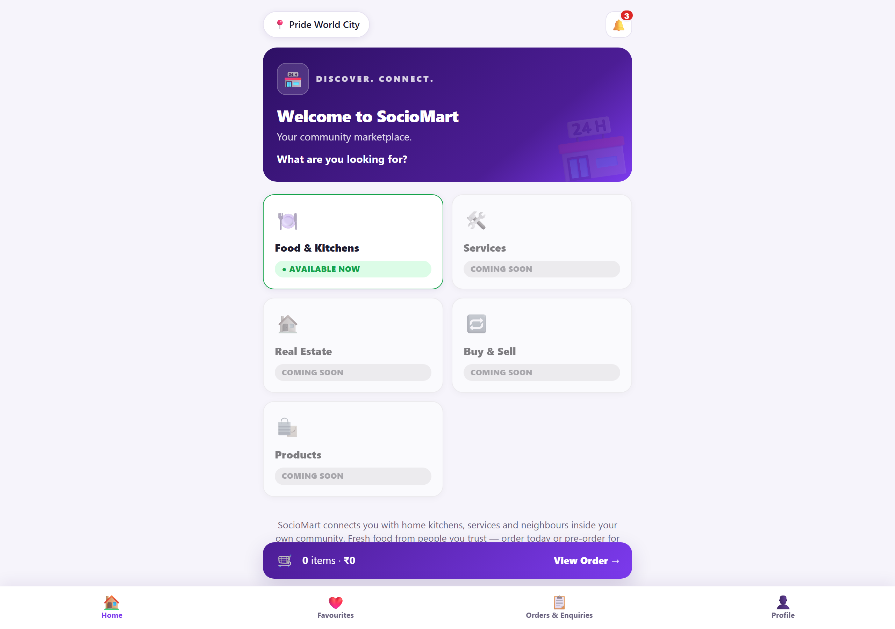
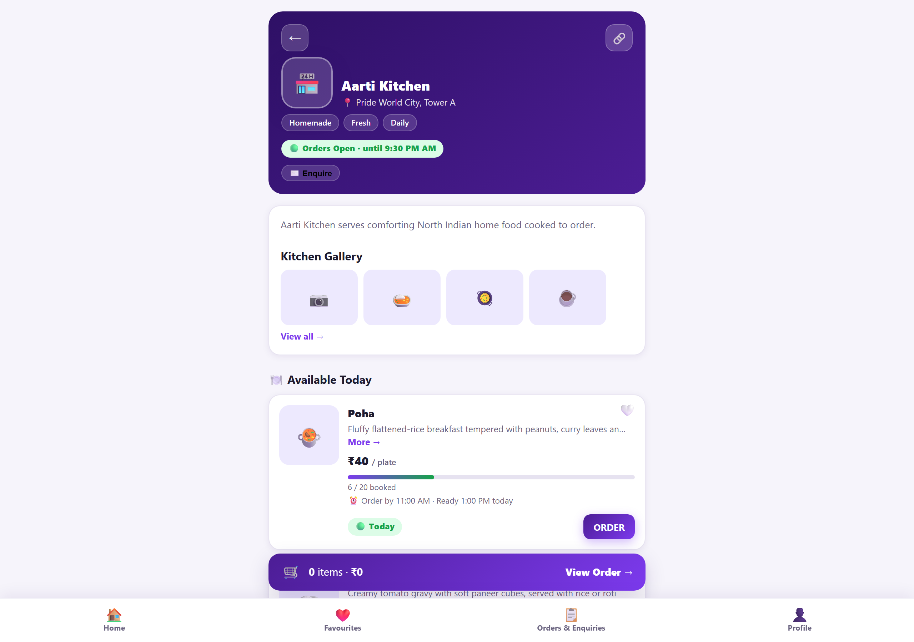
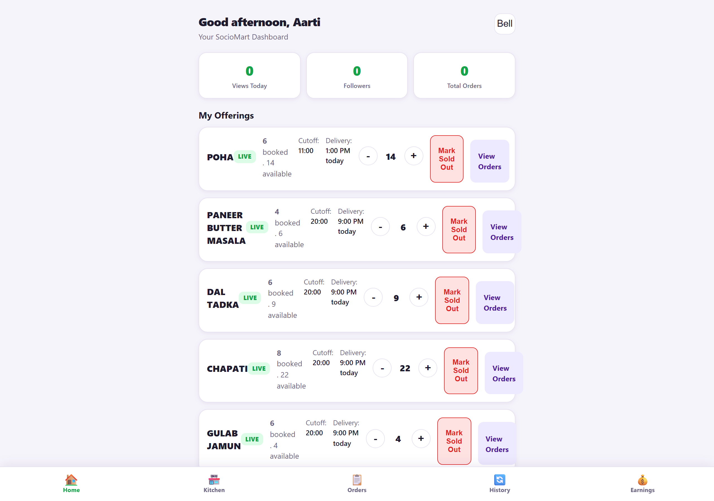
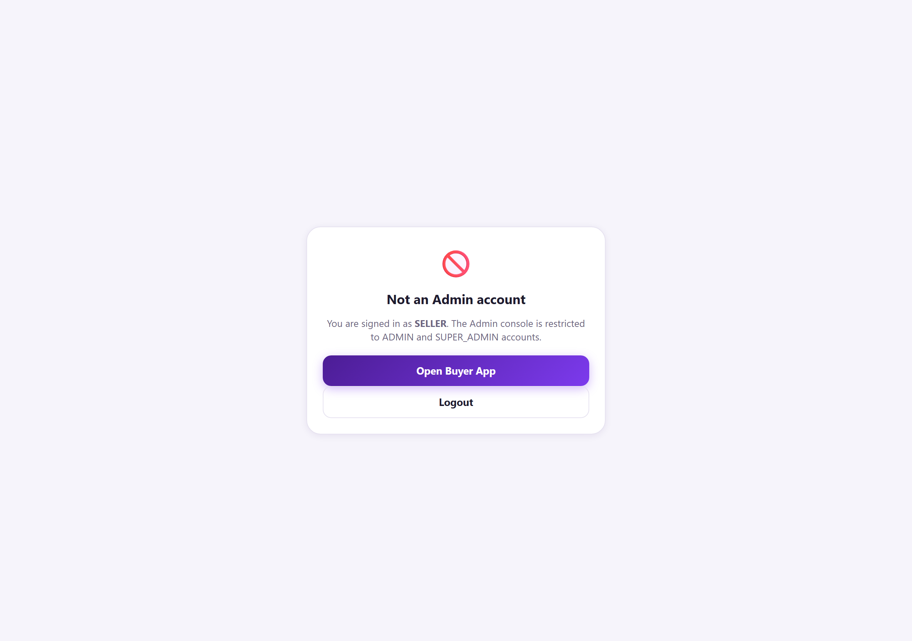
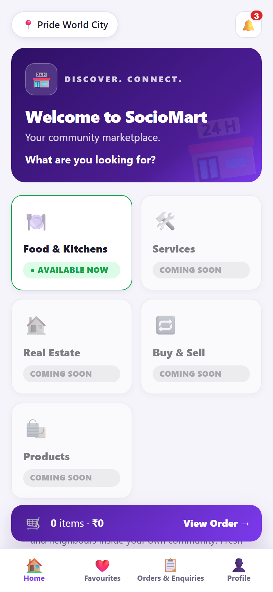
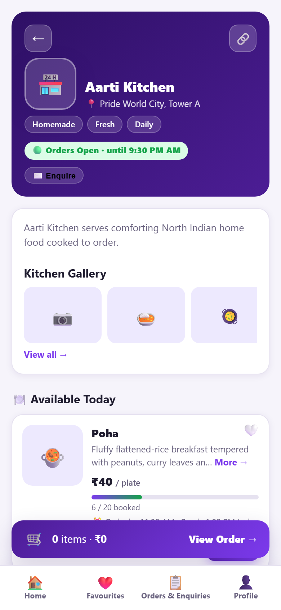
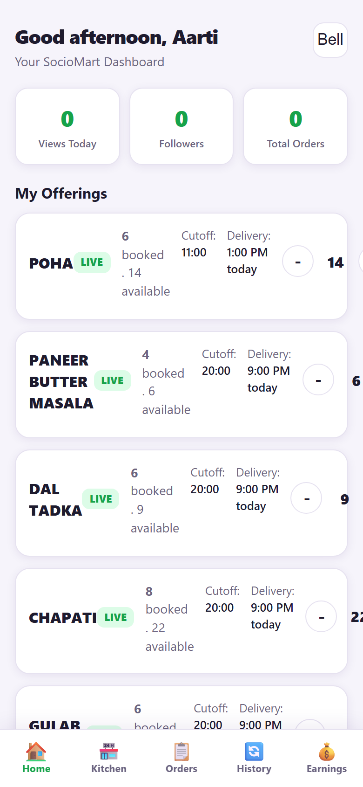

| 1. Project Overview — What & Why |
| 2. Technology Stack |
| 3. System Architecture |
| 4. Buyer Experience (with screenshots) |
| 5. Seller Experience (with screenshots) |
| 6. Admin Console (with screenshot) |
| 7. Key Business Rules & Validations |
| 8. Database Design |
| 9. REST API Reference |
| 10. Testing & Quality Assurance |
| 11. Deployment & 24×7 Public Access |
| 12. Mobile Responsiveness |
| 13. Conclusion & Future Scope |
My First Spring API is a full-stack web application that connects home chefs in a residential society with neighbours who want fresh, homemade food. It removes the need for WhatsApp group chaos by giving every kitchen a professional online menu, order management dashboard, and earnings tracker.
| Role | What They Do | How They Log In |
|---|---|---|
| Buyer | Browse kitchens, add items to a cart, place orders (prepaid or cash-on-delivery), track status | Mobile number + OTP |
| Seller | Create offerings, control inventory, mark sold-out, manage order pipeline, view earnings | Mobile number + OTP (seller-flagged account) |
| Admin | Approve/verify new kitchens, monitor the whole platform | Admin console |
| Layer | Technology | Why It Was Chosen |
|---|---|---|
| Language | Java 21 | Stable LTS, strong typing, industry standard for enterprise APIs |
| Framework | Spring Boot 4.1.1 | Fast REST development, built-in dependency injection, security, validation |
| Data Layer | Spring Data JPA + Hibernate | Object-relational mapping without boilerplate SQL; automatic schema from entities |
| Database | H2 (in-memory/file) | Relational integrity for orders/payments; reseeded with Indian food demo data on every boot |
| Build Tool | Maven (mvnw wrapper) | Reproducible builds — no local install needed, works in CI |
| Frontend | HTML5 + CSS3 + Vanilla JS (SPA) | Zero build step, instant load, served straight from Spring's static folder |
| Sessions | HttpSession cookies | Simple, secure login state for buyer/seller flows |
| Public Access | Render (Docker, free tier) | Free HTTPS public URL — single service serves both Buyer (/) and Seller (/seller.html) with shared H2 state |
| CI | GitHub Actions | Every push is auto-compiled so broken code can never reach main |
| Docs & Testing | Edge headless (PDF), PowerShell E2E harness | Screenshot-driven docs, 45-assertion regression suite |
The application follows a classic 3-layer architecture. The browser never talks to the database directly — every request flows through the API layer, which enforces login and ownership rules.
┌─────────────────────────── Browser (SPA) ───────────────────────────┐
│ index.html (buyer) · seller.html (seller) · admin.html (admin) │
│ js/app.js · js/seller.js · js/config.js │
└──────────────────────────────┬──────────────────────────────────────┘
│ JSON over HTTP (fetch, cookie session)
┌──────────────────────────────▼──────────────────────────────────────┐
│ Controller Layer AuthController · KitchenController · │
│ (REST endpoints) BuyerOrderController · SellerController · │
│ SellerAppController · AdminController │
├─────────────────────────────────────────────────────────────────────┤
│ Service Layer OrderService · SellerService · SellerAppService │
│ (business rules, → inventory math, cutoff validation, template │
│ @Transactional) independence, earnings calculation │
├─────────────────────────────────────────────────────────────────────┤
│ Repository Layer Spring Data JPA interfaces (User, Kitchen, │
│ Product, Order, SellerTemplate, AnalyticsEvent) │
├─────────────────────────────────────────────────────────────────────┤
│ MySQL Database users · kitchens · products · orders · │
│ order_items · seller_templates · events │
└─────────────────────────────────────────────────────────────────────┘
▲ ▲
│ OTP delivery (dev OTP) │
Mobile + Laptop browsers Cloudflare Tunnel (public HTTPS)
GlobalExceptionHandler converts every business error (sold-out item, unauthorised seller, cap reached) into a clean JSON {error, message} response with the correct HTTP status — the frontend never crashes on an unexpected payload.The buyer lands on a card grid of every kitchen in the society. Each card shows the kitchen's name, food description, rating and a live “available today” badge. A search box filters by name or dish instantly. Clicking a card also fires a MENU_VIEW analytics event, which powers the seller dashboard's real “views today” metric (this replaced a hardcoded fake number found during the audit).

Inside a kitchen the buyer sees today's offerings with live remaining quantity (“only 4 of 10 left”). Items that are sold out or past their order cutoff are visibly disabled — the server enforces the same rule again at order time, so the UI can never lie its way into a bad order.

| Step | What Happens | Server Guarantee |
|---|---|---|
| 1. Add to cart | Buyer picks quantity per item | Quantity capped at remaining stock |
| 2. Draft order | POST /api/buyer/orders/draft prices the cart | Server recomputes price from DB — client cannot tamper |
| 3. Buyer details | Name, flat number, mobile confirmed | Validated and stored on the order |
| 4. Place order | POST /api/buyer/orders/place | Inventory decremented atomically; sold-out rejected with HTTP 409 |
| 5. Track | Order shows PENDING → CONFIRMED → DELIVERED | Status transitions validated by the seller pipeline |
The seller dashboard answers four questions at a glance: How many people viewed my menu today? (real analytics count), What's still in stock?, How much have I earned? (split into confirmed-today, pending and this-month), and What orders need action?

| Method | How It Works | Safety Rails |
|---|---|---|
| Manual form | Name, price, unit, max quantity, cutoff time | HH:mm cutoff validation, positive price/quantity checks |
| Favourites (templates) | Save a dish once; republish any day in one click | Strict 3-template cap — 4th save returns HTTP 409 “Maximum 3 favourites” |
| WhatsApp Quick Post | Paste a real WhatsApp message; the parser extracts name, price, quantity and ready-by time | Parser only suggests — nothing is published without the seller confirming (verified: offerings unchanged after parse) |
Each live offering has +/− quantity steppers and a one-tap Sold Out button. The audit and E2E suite proved:
PATCH /api/seller-app/products/{id}/inventory with a delta — server-side arithmetic, race-safe.Orders move through PENDING → CONFIRMED → DELIVERED (or CANCELLED). The Daily Summary (Screen 7A) aggregates plates and revenue per dish; clicking a dish drills into Item Details (7B) showing each buyer row. A cancelled order is excluded from plates, revenue and earnings — counts stay consistent across dashboard, summary and drill-down (asserted by the E2E suite, §10).
The admin console lists all kitchens with their verification status. Admins can approve new sellers before they appear publicly, keeping the marketplace trustworthy. It is a separate single-page view hitting the /api/admin/* endpoints.

Every rule below is enforced on the server, not just in the browser — a hostile or buggy client cannot bypass any of them.
| Rule | Enforcement | Verified By |
|---|---|---|
| Order cutoff time | Strict 24-hour HH:mm; invalid (e.g. 25:99) rejected HTTP 400; ordering after cutoff rejected | E2E I-1b/c |
| Stock can't go negative | Delta pushing stock below 0 → HTTP 400 | E2E D3 |
| Sold-out unorderable | Draft & place reject sold-out items (HTTP 409) | probe |
| Template cap = 3 | 4th save → HTTP 409 “Maximum 3 favourites” | E2E F2 |
| Template independence | Publishing creates a new Product — live edits never touch the saved favourite | E2E G1 |
| Seller ownership | Every mutation checks kitchen owner; else HTTP 403 | E2E E1 |
| Unlimited quantity | No stepper; delta → “no quantity limit”; sold-out still allowed | E2E G2/G3 |
| Quick Post never auto-publishes | Parse is read-only — offerings unchanged after parse | E2E H2 |
| Cancelled ≠ revenue | Excluded from plates, revenue, earnings, drill-down | E2E L1–L7 |
| Earnings states | pending = PENDING only; confirmedToday = CONFIRMED/DELIVERED | E2E K1/K2 |
| Server-side pricing | Totals recomputed from DB — client totals ignored | E2E I1 |
Seven tables, one per real-world concept. Relationships use JPA ManyToOne joins; demo data is seeded by DemoDataSeeder on first boot.
| Table | Purpose | Key Columns |
|---|---|---|
users | Buyers, sellers, admin | mobile_number (unique), name, is_seller, flat_number |
kitchens | A seller's shopfront | seller_id (FK), name, slug, rating, available_today, verified |
products | One day's live offering | kitchen_id (FK), price, max_quantity, remaining_quantity, available_date, cutoff_time, ready_by_time |
orders | One purchase event | buyer_id, kitchen_id, total_amount, payment_status, order_status, buyer_name, buyer_flat |
order_items | Line items of an order | order_id (FK), product_id (FK), product_name, quantity, unit_price |
seller_templates | Saved favourites (max 3) | seller_id (FK), name, price, max_quantity, cutoff_time |
analytics_events | Raw behaviour log | kitchen_id, event_type (MENU_VIEW…), created_at |
remaining_quantity is its own column: the stepper updates one integer per click instead of re-deriving stock from orders — fast and race-safe. Why order_items.product_name is denormalised: a dish can be renamed or deleted later; the historical order must still show exactly what the buyer ordered.All endpoints return JSON. Errors always arrive as { "error": "<CODE>", "message": "<human readable>" } with a proper HTTP status (400 bad input, 401 not logged in, 403 wrong owner, 404 missing, 409 conflict).
| Method & Path | Who | What It Does |
|---|---|---|
POST /api/auth/otp/request / verify | public | OTP login / registration, creates session |
GET /api/kitchens · /{slug} | public | Kitchen list / one kitchen with today's offerings (logs MENU_VIEW) |
POST /api/buyer/orders/draft | buyer | Price the cart server-side |
POST /api/buyer/orders/place | buyer | Place order, decrement stock atomically |
GET /api/seller-app/dashboard | seller | Earnings, offerings, orders, real view count |
POST /api/seller-app/products | seller | Create offering (manual / quick-post confirm) |
PATCH …/products/{id}/inventory | seller | Stepper: add/subtract stock by delta |
POST …/products/{id}/sold-out | seller | Force mark sold out (works on unlimited items) |
GET/POST/DELETE /api/seller-app/templates… | seller | Manage the 3 saved favourites |
POST /api/seller-app/templates/{id}/publish | seller | Republish favourite as independent offering |
POST /api/seller-app/parse-message | seller | WhatsApp Quick Post parser (read-only) |
GET /api/seller-app/orders/summary | seller | Screen 7A: per-dish plates + revenue |
GET /api/seller-app/orders/product/{id} | seller | Screen 7B: per-buyer drill-down |
GET /api/seller-app/earnings | seller | Pending / confirmed-today / this-month |
PATCH /api/seller/orders/{id}/status | seller | Order pipeline transitions (incl. cancel) |
PUT /api/seller/products/{id} | seller | Partial update (price, cutoff, stock…) |
/api/admin/… | admin | Kitchen listing, verification/approval |
A PowerShell harness (e2e-deep-test.ps1, versioned on GitHub) drives the real running application over HTTP — the same path a browser takes — and asserts 45 behaviours. It is delta-based, so it can be re-run on a live instance any number of times without false failures.
| Group | What It Proves | Count |
|---|---|---|
| A–C · Auth & Dashboard | OTP seller login; “views today” is a real analytics count, not the old hardcoded formula | 4 |
| D · Inventory | +1/−1 deltas apply exactly; negative overflow → 400 | 4 |
| E · Security | Other seller's inventory update → 403 | 1 |
| F–G · Templates | 3-template cap enforced; unlimited-quantity publish, stepper rejection, force sold-out | 6 |
| H · Quick Post | Parser extracts name/price; publishable flag; offerings unchanged | 3 |
| I · Ordering | Cutoff validation (23:59 accepted, 25:99 rejected); restock; draft total from DB price; PENDING order placed | 7 |
| J · Aggregations | Summary (7A) plates/revenue match drill-down (7B) exactly | 5 |
| K · Earnings | Pending counts PENDING only; confirmedToday excludes it | 2 |
| L · Cancel semantics | Cancel → excluded from revenue, aggregates, drill-down, earnings; counters consistent everywhere | 7 |
| M · Sold-out | Manual transition → remaining 0 | 1 |
Final result: 45/45 PASS — including a full run executed through the public Cloudflare URL.
37 + orders*2) replaced with a real MENU_VIEW analytics count.getTemplates endpoint — the Favourites screen returned HTTP 500; implemented + mapped.seller.js (empty states render without crashing).Hosting provider: Render.com — free Docker web service (free tier, no credit card required). The app is built from the existing Dockerfile (multi-stage Maven → JRE 21) and deployed as a Render Blueprint via render.yaml. One service serves both Buyer (/) and Seller (/seller.html) with a shared in-process H2 database — no split instances, no data desync.
Render injects the PORT environment variable automatically; the app binds to ${PORT:8081} (see application.properties). Render auto-deploys on every push to main. The free tier sleeps after ~15 min of inactivity; a free uptime pinger (e.g. cron-job.org hitting /api/kitchens every 10 min) keeps the service warm.
| Item | Status |
|---|---|
| Source of truth | github.com/utkarshnikhare/my-first-spring-api — branch main — deployed on Render as a single Docker service (sociomart-demo) |
| Commit history | Incremental, descriptive commits (hardening → CI → E2E suite → Render deployment) |
.gitignore | Excludes logs, build output, throwaway artifacts, tokens; allows the E2E suite and start runners |
| CI | .github/workflows/ci.yml — every push runs mvn clean compile on JDK 21; broken code cannot reach main |
| Secrets | None committed — DB credentials stay in local config, excluded by gitignore rules |
The entire UI is built mobile-first and was verified on a 390×844 phone viewport in addition to desktop. Key adaptations:
 Buyer home — phone |
 Kitchen menu — phone |
 Seller dashboard — phone |
| Area | Proposed Enhancement |
|---|---|
| Payments | Integrate UPI intent / payment-gateway callbacks to auto-confirm PENDING orders instead of manual reconciliation. |
| Notifications | Push/SMS alerts on order placement, cutoff reminders, and sold-out events. |
| Concurrency | Optimistic locking (@Version) on inventory for multi-buyer last-plate races. |
| Scale-out hosting | Move from the local tunnel to a named Cloudflare tunnel or PaaS (Railway/Render) with a managed MySQL for permanent uptime. |
| Analytics | Seller trend charts (7-day views/orders/earnings) on top of the existing analytics_events table. |
| Testing | Add JUnit service-layer unit tests and a GitHub Actions job to run the API suite in CI. |